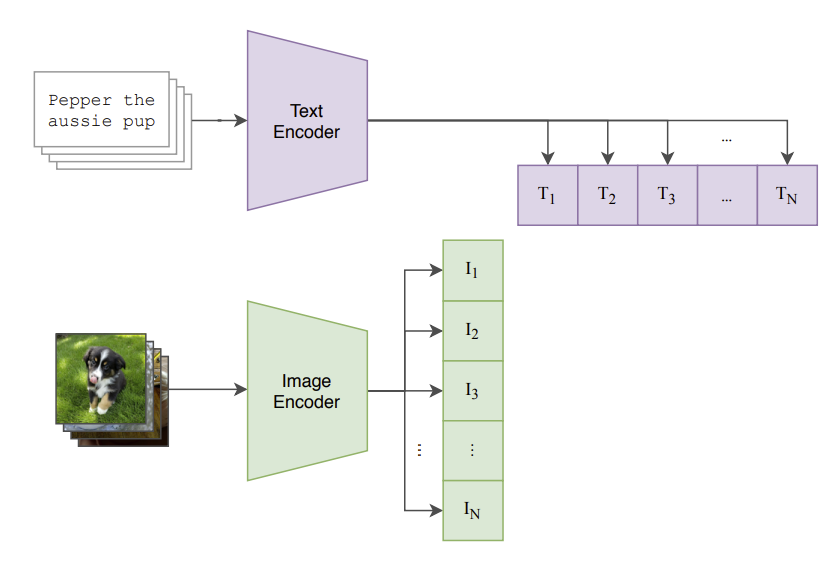

CLIP Code Guide: Complete Implementation and Usage

Table of Contents
Introduction to CLIP
CLIP (Contrastive Language-Image Pre-training) is a neural network architecture developed by OpenAI that learns visual concepts from natural language supervision. It can understand images in the context of natural language descriptions, enabling zero-shot classification and multimodal understanding.
Key Features:
- Zero-shot image classification
- Text-image similarity computation
- Multimodal embeddings
- Transfer learning capabilities
Architecture Overview
CLIP consists of two main components: 1. Text Encoder: Processes text descriptions (typically a Transformer) 2. Image Encoder: Processes images (typically a Vision Transformer or ResNet)
The model learns to maximize the cosine similarity between corresponding text-image pairs while minimizing it for non-corresponding pairs.
Setting Up the Environment
Installing Dependencies
# Basic installation
pip install torch torchvision transformers
pip install clip-by-openai # Official OpenAI CLIP
pip install open-clip-torch # OpenCLIP (more models)
# For development and training
pip install wandb datasets accelerate
pip install matplotlib pillow requestsAlternative Installation
# Install from source
git clone https://github.com/openai/CLIP.git
cd CLIP
pip install -e .Basic CLIP Usage
1. Loading Pre-trained CLIP Model
import clip
import torch
from PIL import Image
import requests
from io import BytesIO
# Load model and preprocessing
device = "cuda" if torch.cuda.is_available() else "cpu"
model, preprocess = clip.load("ViT-B/32", device=device)
# Available models: ViT-B/32, ViT-B/16, ViT-L/14, RN50, RN101, RN50x4, etc.
print(f"Available models: {clip.available_models()}")2. Image Classification (Zero-shot)
def zero_shot_classification(image_path, text_options):
# Load and preprocess image
image = Image.open(image_path)
image_input = preprocess(image).unsqueeze(0).to(device)
# Tokenize text options
text_inputs = clip.tokenize(text_options).to(device)
# Get predictions
with torch.no_grad():
image_features = model.encode_image(image_input)
text_features = model.encode_text(text_inputs)
# Calculate similarities
similarities = (100.0 * image_features @ text_features.T).softmax(dim=-1)
# Get results
values, indices = similarities[0].topk(len(text_options))
results = []
for value, index in zip(values, indices):
results.append({
'label': text_options[index],
'confidence': value.item()
})
return results
# Example usage
text_options = ["a dog", "a cat", "a car", "a bird", "a house"]
results = zero_shot_classification("path/to/image.jpg", text_options)
for result in results:
print(f"{result['label']}: {result['confidence']:.2%}")3. Text-Image Similarity
def compute_similarity(image_path, text_description):
# Load image
image = Image.open(image_path)
image_input = preprocess(image).unsqueeze(0).to(device)
# Tokenize text
text_input = clip.tokenize([text_description]).to(device)
# Get features
with torch.no_grad():
image_features = model.encode_image(image_input)
text_features = model.encode_text(text_input)
# Normalize features
image_features = image_features / image_features.norm(dim=-1, keepdim=True)
text_features = text_features / text_features.norm(dim=-1, keepdim=True)
# Compute similarity
similarity = (image_features @ text_features.T).item()
return similarity
# Example usage
similarity = compute_similarity("dog.jpg", "a golden retriever sitting in grass")
print(f"Similarity: {similarity:.4f}")Custom CLIP Implementation
Basic CLIP Architecture
import torch
import torch.nn as nn
import torch.nn.functional as F
from transformers import GPT2Model, GPT2Tokenizer
import timm
class CLIPModel(nn.Module):
def __init__(self,
image_encoder_name='resnet50',
text_encoder_name='gpt2',
embed_dim=512,
image_resolution=224,
vocab_size=49408):
super().__init__()
self.embed_dim = embed_dim
self.image_resolution = image_resolution
# Image encoder
self.visual = timm.create_model(image_encoder_name, pretrained=True, num_classes=0)
visual_dim = self.visual.num_features
# Text encoder
self.text_encoder = GPT2Model.from_pretrained(text_encoder_name)
text_dim = self.text_encoder.config.n_embd
# Projection layers
self.visual_projection = nn.Linear(visual_dim, embed_dim, bias=False)
self.text_projection = nn.Linear(text_dim, embed_dim, bias=False)
# Learnable temperature parameter
self.logit_scale = nn.Parameter(torch.ones([]) * np.log(1 / 0.07))
self.initialize_parameters()
def initialize_parameters(self):
# Initialize projection layers
nn.init.normal_(self.visual_projection.weight, std=0.02)
nn.init.normal_(self.text_projection.weight, std=0.02)
def encode_image(self, image):
# Extract visual features
visual_features = self.visual(image)
# Project to common embedding space
image_features = self.visual_projection(visual_features)
# Normalize
image_features = F.normalize(image_features, dim=-1)
return image_features
def encode_text(self, text):
# Get text features from last token
text_outputs = self.text_encoder(text)
# Use last token's representation
text_features = text_outputs.last_hidden_state[:, -1, :]
# Project to common embedding space
text_features = self.text_projection(text_features)
# Normalize
text_features = F.normalize(text_features, dim=-1)
return text_features
def forward(self, image, text):
image_features = self.encode_image(image)
text_features = self.encode_text(text)
# Compute logits
logit_scale = self.logit_scale.exp()
logits_per_image = logit_scale * image_features @ text_features.t()
logits_per_text = logits_per_image.t()
return logits_per_image, logits_per_textCLIP Loss Function
def clip_loss(logits_per_image, logits_per_text):
"""
Contrastive loss for CLIP training
"""
batch_size = logits_per_image.shape[0]
labels = torch.arange(batch_size, device=logits_per_image.device)
# Cross-entropy loss for both directions
loss_i = F.cross_entropy(logits_per_image, labels)
loss_t = F.cross_entropy(logits_per_text, labels)
# Average the losses
loss = (loss_i + loss_t) / 2
return lossTraining CLIP from Scratch
Dataset Preparation
import torch
from torch.utils.data import Dataset, DataLoader
from PIL import Image
import json
class ImageTextDataset(Dataset):
def __init__(self, data_path, image_dir, transform=None, tokenizer=None, max_length=77):
with open(data_path, 'r') as f:
self.data = json.load(f)
self.image_dir = image_dir
self.transform = transform
self.tokenizer = tokenizer
self.max_length = max_length
def __len__(self):
return len(self.data)
def __getitem__(self, idx):
item = self.data[idx]
# Load image
image_path = os.path.join(self.image_dir, item['image'])
image = Image.open(image_path).convert('RGB')
if self.transform:
image = self.transform(image)
# Tokenize text
text = item['caption']
if self.tokenizer:
text_tokens = self.tokenizer(
text,
max_length=self.max_length,
padding='max_length',
truncation=True,
return_tensors='pt'
)['input_ids'].squeeze(0)
else:
# Simple tokenization for demonstration
text_tokens = torch.zeros(self.max_length, dtype=torch.long)
return image, text_tokens, textTraining Loop
def train_clip(model, dataloader, optimizer, scheduler, device, num_epochs):
model.train()
for epoch in range(num_epochs):
total_loss = 0
num_batches = 0
for batch_idx, (images, text_tokens, _) in enumerate(dataloader):
images = images.to(device)
text_tokens = text_tokens.to(device)
# Forward pass
logits_per_image, logits_per_text = model(images, text_tokens)
# Compute loss
loss = clip_loss(logits_per_image, logits_per_text)
# Backward pass
optimizer.zero_grad()
loss.backward()
optimizer.step()
total_loss += loss.item()
num_batches += 1
# Logging
if batch_idx % 100 == 0:
print(f'Epoch {epoch}, Batch {batch_idx}, Loss: {loss.item():.4f}')
# Update learning rate
scheduler.step()
avg_loss = total_loss / num_batches
print(f'Epoch {epoch} completed. Average Loss: {avg_loss:.4f}')
# Training setup
model = CLIPModel().to(device)
optimizer = torch.optim.AdamW(model.parameters(), lr=1e-4, weight_decay=0.01)
scheduler = torch.optim.lr_scheduler.CosineAnnealingLR(optimizer, T_max=num_epochs)
# Start training
train_clip(model, dataloader, optimizer, scheduler, device, num_epochs=100)Fine-tuning CLIP
Domain-Specific Fine-tuning
def fine_tune_clip(pretrained_model, dataloader, num_epochs=10, lr=1e-5):
# Freeze most layers, only fine-tune projection layers
for param in pretrained_model.visual.parameters():
param.requires_grad = False
for param in pretrained_model.text_encoder.parameters():
param.requires_grad = False
# Only train projection layers
optimizer = torch.optim.Adam([
{'params': pretrained_model.visual_projection.parameters()},
{'params': pretrained_model.text_projection.parameters()},
{'params': [pretrained_model.logit_scale]}
], lr=lr)
pretrained_model.train()
for epoch in range(num_epochs):
for batch_idx, (images, text_tokens, _) in enumerate(dataloader):
images = images.to(device)
text_tokens = text_tokens.to(device)
logits_per_image, logits_per_text = pretrained_model(images, text_tokens)
loss = clip_loss(logits_per_image, logits_per_text)
optimizer.zero_grad()
loss.backward()
optimizer.step()
if batch_idx % 50 == 0:
print(f'Fine-tune Epoch {epoch}, Batch {batch_idx}, Loss: {loss.item():.4f}')Advanced Applications
1. Image Search with CLIP
class CLIPImageSearch:
def __init__(self, model, preprocess):
self.model = model
self.preprocess = preprocess
self.image_features = None
self.image_paths = None
def index_images(self, image_paths):
"""Pre-compute features for all images"""
self.image_paths = image_paths
features = []
for img_path in image_paths:
image = Image.open(img_path)
image_input = self.preprocess(image).unsqueeze(0).to(device)
with torch.no_grad():
image_feature = self.model.encode_image(image_input)
features.append(image_feature)
self.image_features = torch.cat(features, dim=0)
self.image_features = self.image_features / self.image_features.norm(dim=-1, keepdim=True)
def search(self, query_text, top_k=5):
"""Search for images matching the text query"""
text_input = clip.tokenize([query_text]).to(device)
with torch.no_grad():
text_features = self.model.encode_text(text_input)
text_features = text_features / text_features.norm(dim=-1, keepdim=True)
# Compute similarities
similarities = (text_features @ self.image_features.T).squeeze(0)
# Get top-k results
top_similarities, top_indices = similarities.topk(top_k)
results = []
for sim, idx in zip(top_similarities, top_indices):
results.append({
'path': self.image_paths[idx],
'similarity': sim.item()
})
return results
# Usage example
search_engine = CLIPImageSearch(model, preprocess)
search_engine.index_images(list_of_image_paths)
results = search_engine.search("a red sports car", top_k=10)2. Content-Based Image Clustering
from sklearn.cluster import KMeans
import numpy as np
def cluster_images_by_content(image_paths, n_clusters=5):
# Extract features for all images
features = []
for img_path in image_paths:
image = Image.open(img_path)
image_input = preprocess(image).unsqueeze(0).to(device)
with torch.no_grad():
feature = model.encode_image(image_input)
features.append(feature.cpu().numpy())
# Convert to numpy array
features = np.vstack(features)
# Perform clustering
kmeans = KMeans(n_clusters=n_clusters, random_state=42)
cluster_labels = kmeans.fit_predict(features)
# Organize results
clusters = {}
for i, label in enumerate(cluster_labels):
if label not in clusters:
clusters[label] = []
clusters[label].append(image_paths[i])
return clusters3. Visual Question Answering
def visual_qa(image_path, question, answer_choices):
"""Simple VQA using CLIP"""
image = Image.open(image_path)
image_input = preprocess(image).unsqueeze(0).to(device)
# Create prompts combining question with each answer
prompts = [f"Question: {question} Answer: {choice}" for choice in answer_choices]
text_inputs = clip.tokenize(prompts).to(device)
with torch.no_grad():
image_features = model.encode_image(image_input)
text_features = model.encode_text(text_inputs)
# Compute similarities
similarities = (100.0 * image_features @ text_features.T).softmax(dim=-1)
# Return the most likely answer
best_idx = similarities.argmax().item()
return answer_choices[best_idx], similarities[0][best_idx].item()
# Example usage
answer, confidence = visual_qa(
"image.jpg",
"What color is the car?",
["red", "blue", "green", "yellow", "black"]
)
print(f"Answer: {answer}, Confidence: {confidence:.2%}")Performance Optimization
1. Batch Processing
def batch_encode_images(image_paths, batch_size=32):
"""Process images in batches for better efficiency"""
all_features = []
for i in range(0, len(image_paths), batch_size):
batch_paths = image_paths[i:i+batch_size]
batch_images = []
for path in batch_paths:
image = Image.open(path)
image_input = preprocess(image)
batch_images.append(image_input)
batch_tensor = torch.stack(batch_images).to(device)
with torch.no_grad():
batch_features = model.encode_image(batch_tensor)
all_features.append(batch_features.cpu())
return torch.cat(all_features, dim=0)2. Mixed Precision Training
from torch.cuda.amp import autocast, GradScaler
def train_with_mixed_precision(model, dataloader, optimizer, num_epochs):
scaler = GradScaler()
model.train()
for epoch in range(num_epochs):
for images, text_tokens, _ in dataloader:
images = images.to(device)
text_tokens = text_tokens.to(device)
optimizer.zero_grad()
# Forward pass with autocast
with autocast():
logits_per_image, logits_per_text = model(images, text_tokens)
loss = clip_loss(logits_per_image, logits_per_text)
# Backward pass with scaling
scaler.scale(loss).backward()
scaler.step(optimizer)
scaler.update()3. Model Quantization
import torch.quantization as quantization
def quantize_clip_model(model):
"""Quantize CLIP model for inference"""
model.eval()
# Specify quantization configuration
model.qconfig = quantization.get_default_qconfig('fbgemm')
# Prepare model for quantization
model_prepared = quantization.prepare(model, inplace=False)
# Calibrate with sample data (you need to provide calibration data)
# ... calibration code here ...
# Convert to quantized model
model_quantized = quantization.convert(model_prepared, inplace=False)
return model_quantizedCommon Issues and Solutions
1. Memory Management
# Clear GPU cache
torch.cuda.empty_cache()
# Use gradient checkpointing for large models
def enable_gradient_checkpointing(model):
if hasattr(model.visual, 'set_grad_checkpointing'):
model.visual.set_grad_checkpointing(True)
if hasattr(model.text_encoder, 'gradient_checkpointing_enable'):
model.text_encoder.gradient_checkpointing_enable()2. Handling Different Image Sizes
from torchvision import transforms
def create_adaptive_transform(target_size=224):
return transforms.Compose([
transforms.Resize(target_size, interpolation=transforms.InterpolationMode.BICUBIC),
transforms.CenterCrop(target_size),
transforms.ToTensor(),
transforms.Normalize(
mean=[0.485, 0.456, 0.406],
std=[0.229, 0.224, 0.225]
)
])3. Text Preprocessing
import re
def preprocess_text(text, max_length=77):
"""Clean and preprocess text for CLIP"""
# Remove special characters and extra whitespace
text = re.sub(r'[^\w\s]', '', text)
text = ' '.join(text.split())
# Truncate if too long
words = text.split()
if len(words) > max_length - 2: # Account for special tokens
text = ' '.join(words[:max_length-2])
return text4. Model Evaluation Utilities
def evaluate_zero_shot_accuracy(model, preprocess, test_loader, class_names):
"""Evaluate zero-shot classification accuracy"""
model.eval()
correct = 0
total = 0
# Encode class names
text_inputs = clip.tokenize([f"a photo of a {name}" for name in class_names]).to(device)
with torch.no_grad():
text_features = model.encode_text(text_inputs)
text_features = text_features / text_features.norm(dim=-1, keepdim=True)
for images, labels in test_loader:
images = images.to(device)
# Encode images
image_features = model.encode_image(images)
image_features = image_features / image_features.norm(dim=-1, keepdim=True)
# Compute similarities
similarities = (100.0 * image_features @ text_features.T).softmax(dim=-1)
predictions = similarities.argmax(dim=-1)
correct += (predictions == labels.to(device)).sum().item()
total += labels.size(0)
accuracy = correct / total
return accuracy
# Usage
accuracy = evaluate_zero_shot_accuracy(model, preprocess, test_loader, class_names)
print(f"Zero-shot accuracy: {accuracy:.2%}")Conclusion
This guide covers the essential aspects of working with CLIP, from basic usage to advanced implementations. Key takeaways:
- Start Simple: Use pre-trained models for most applications
- Understand the Architecture: CLIP’s power comes from joint text-image training
- Optimize for Your Use Case: Fine-tune or customize based on your specific needs
- Monitor Performance: Use proper evaluation metrics and optimization techniques
- Handle Edge Cases: Implement robust preprocessing and error handling
For production deployments, consider:
- Model quantization for faster inference
- Batch processing for efficiency
- Proper error handling and fallbacks
- Monitoring and logging for performance tracking
The field of multimodal AI is rapidly evolving, so stay updated with the latest research and implementations to leverage CLIP’s full potential in your applications.